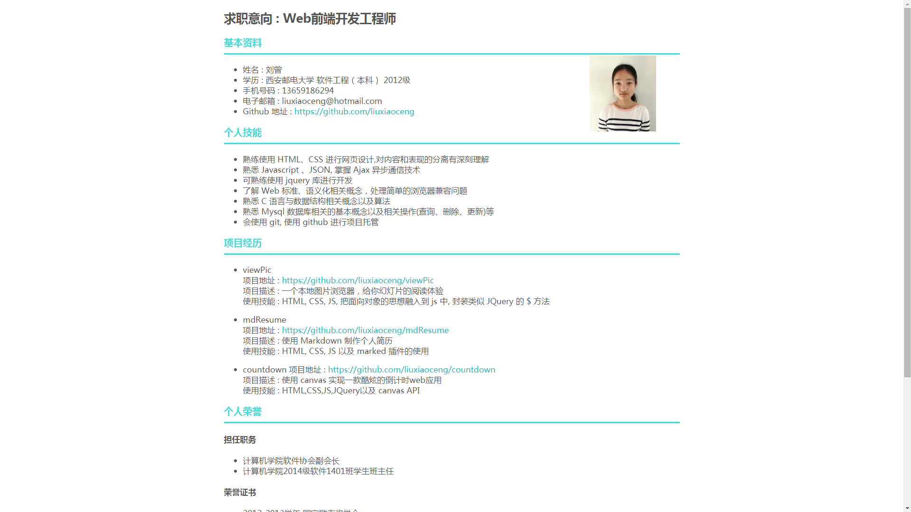
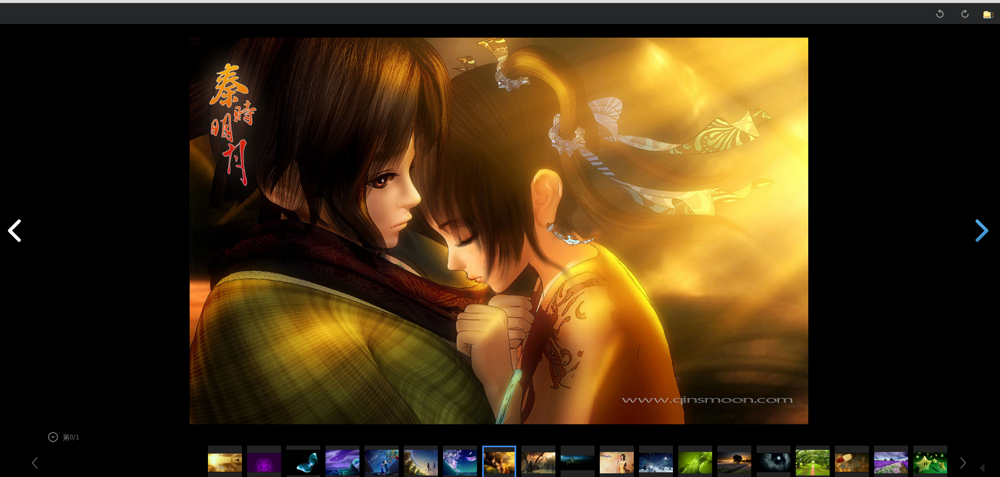
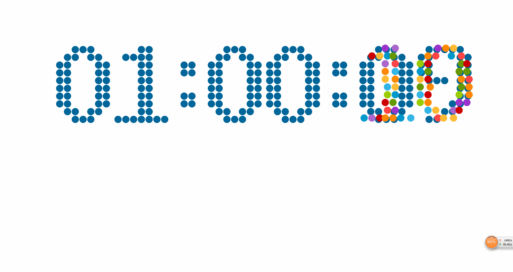

第一屏
第二屏
第三屏
第四屏
第五屏
我是刘小曾
我毕业于西安邮电大学软件工程
快乐是我生命的原色
前端带给人的是快乐与满足
所以, 我喜欢前端
这不, 我采用前端技术和 Markdown 制作了我人生第一份个人简历 ^_^
viewPic
一个本地图片浏览器，给你幻灯片的阅读体验
使用HTML，CSS，原生JavaScript
第一次把面向对象只是应用到js中
模仿 JQuery 封装了
$
方法
countdown
使用 canvas 实现一款酷炫的倒计时 web 应用
采用 HTML, CSS, JS等基本前端技术
使用了 jQuery 来操纵元素
使用了 canvas API 来绘制酷炫小球
我喜欢诗与远方
如果喜欢我，请 email 联系我
邮箱 :
liuxiaoceng@hotmail.com
如果喜欢我的项目, 请去 Github 关注我
Github:
https://github.com/liuxiaoceng
项目名称:
mdResume
项目地址:
https://github.com/liuxiaoceng/mdResume
项目简介:
使用 Markdown 制作个人简历
已有功能:
可以使用 Markdwon 语法去书写简历
方便更新:只需要更新 Markdown 文本，不需要书写 HTML 标签
待添列表:
提升: 寻找或者编写好的 Markdown 解析器
新增: 可以导出为 PDF(浏览器本身就可以)

项目名称:
viewPic
项目地址:
https://github.com/liuxiaoceng/viewPic
项目简介:
这是一个简单的本地图片浏览工具，不需要借助任何工具，只要你有浏览器即可查看本地文件夹下的图片
已有功能:
正常的图片查看
点击打开文件夹，加载整个文件夹以及子文件夹下的所有图片
点击切换上一张和下一张
通过底部列表预览图片，点击选择查看原图
逆时针和顺时针旋转
待添列表:
修复:左下角当前页不准确
性能提升:异步加载图片列表
x新增: 播放本地视频

项目名称:
countdown
项目地址:
https://github.com/liuxiaoceng/countdown
项目简介:
使用 canvas 实现一款酷炫的倒计时web应用
已有功能:
倒计时
当时间变化的实话，会有对应数字的绚丽的小球散落
小球落在地上会弹跳，速度逐渐降低
待添列表:
性能提升：代码层面每次获取时间毫秒自动转化相应时间数字,避免每次计算
新增: 当到达时间点, 会有音乐响起，表示时间到
新增: 时间的数字正好对应HEX颜色值,时间变化，背景颜色改变

生活不只是眼前的苟且，还有诗和远方。